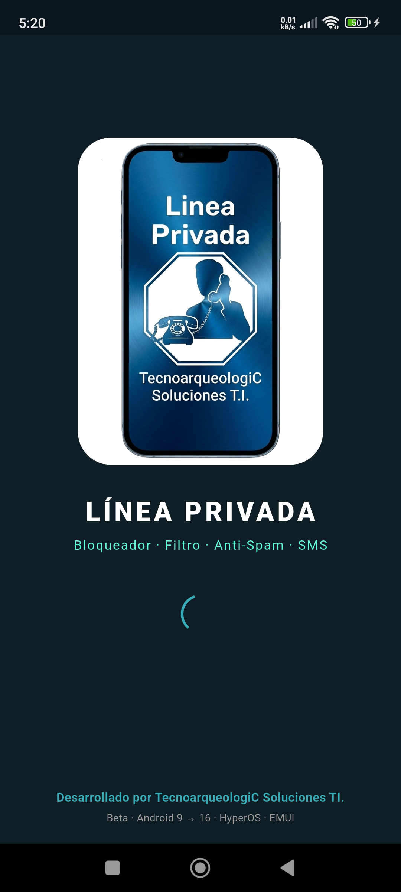
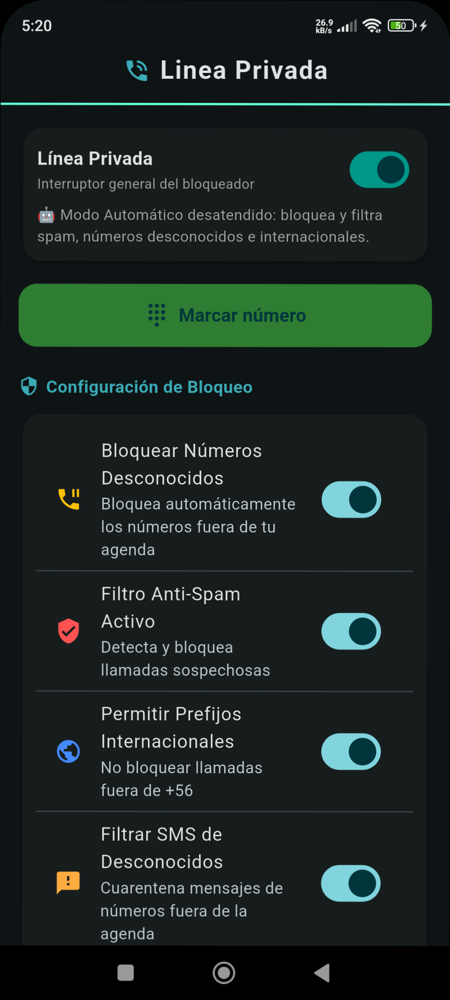
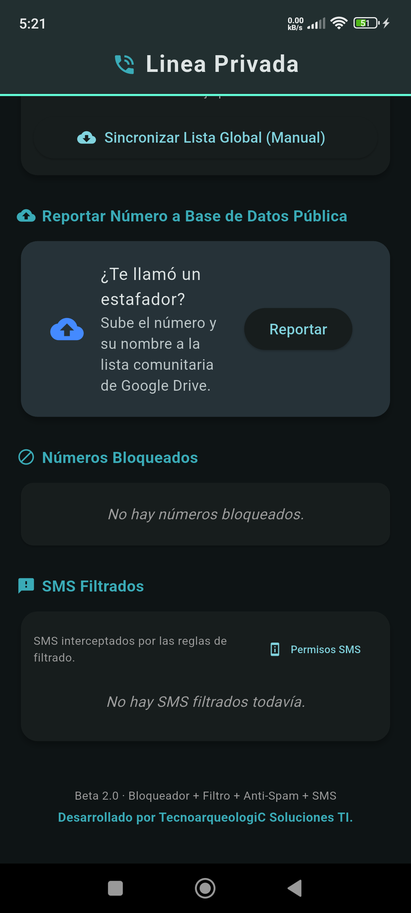

🛡️ Linea Privada TecnoarqueologiC
Manual de Usuario — Beta 2.0
Bloqueador y filtro de llamadas y SMS desconocidos + sincronización con base comunitaria.
Android 9 → 16 HyperOS / MIUI EMUI / HarmonyOS
1. Instalación
- Descarga el archivo
app-release.apkdesde la página de descarga. - Copia el APK al equipo (Xiaomi Note 11 o cualquier Android 9+).
- Ábrelo y toca "Instalar". Acepta "Instalar apps desconocidas" si el sistema lo solicita.
- En la primera apertura, concede todos los permisos que pida: teléfono, contactos, SMS, notificaciones.
- Acepta el rol de Teléfono por defecto y de Filtrado de llamadas cuando el sistema lo ofrezca.
- En la solicitud de Accesibilidad, actívala (opcional pero recomendada para el corte automático en equipos sin permisos de sistema).
Pantalla de bienvenida (Splash)

2. Uso básico
2.1 Pantalla principal
Desde la pantalla principal puedes:
- Encender o apagar la app con el interruptor general.
- Abrir el marcador telefónico con el botón "Marcar número".
- Configurar las reglas de filtrado (bloquear desconocidos, anti-spam, internacionales, SMS).
- Sincronizar la lista negra con Google Drive.
- Reportar números de spam a la base comunitaria.
- Ver y gestionar números bloqueados y SMS filtrados.
Pantalla principal (Home)

2.2 Marcador telefónico
- Teclado numérico 0-9,
*y#. - Botón
⌫borra el último dígito (mantén presionado para limpiar todo). - Botón verde 📞 Llamar: inicia la llamada.
- Botón rojo 📵: cuelga si hay llamada en curso.
- Accesos directos: Contactos, Perdidas, Altavoz.
2.3 Duración de la llamada (DTMF)
Al estar en una llamada conectada, el teclado envía tonos DTMF para navegar menús automáticos (servicios de atención, IVR). Solo presiona la opción que necesites: 1, 2, 3...
3. Filtrado automático de desconocidos
- Primera vez: si un número desconocido llama por primera vez, la aplicación no filtra la llamada. Suena normalmente y el usuario decide si contesta o no.
- Desde la segunda vez: se aplican las reglas del filtro (ráfaga de llamadas, prefijos quemados, lista negra comunitaria, etc.).
- Las llamadas de tus contactos o números en la lista blanca sí suenan normalmente.
- Las llamadas desconocidas sin ráfaga suenan con tope de 7 tonadas; si nadie contesta, la app intenta colgar.
- Los SMS de desconocidos se filtran y aparecen en la sección de mensajes filtrados.
Números bloqueados

SMS filtrados

4. Configuración de bloqueo
| Opción | Descripción |
|---|---|
| Bloquear Números Desconocidos | Bloquea automáticamente números fuera de tu agenda. |
| Filtro Anti-Spam Activo | Detecta y bloquea llamadas sospechosas (call centers, ráfagas, prefijos quemados). |
| Permitir Prefijos Internacionales | No bloquear llamadas fuera de +56 (Chile). |
| Filtrar SMS de Desconocidos | Cuarentena mensajes de números fuera de la agenda. |
5. Sincronización con Google Drive
La base de datos comunitaria se descarga desde una hoja pública de Google Sheets y los bloqueos automáticos se suben para compartir con otros usuarios.
- Toca "Sincronizar Lista Global" para descargar la base negra actualizada.
- Toca "Reportar" para subir un número posible spam a la base comunitaria.
- La aplicación verifica conectividad antes de sincronizar. Si no hay internet, muestra un aviso claro.
6. Reglas de bloqueo automático
- Número oculto / privado → bloqueo inmediato.
- Internacional (fuera de +56, salvo permiso) → bloqueo inmediato.
- Estructura extraña / Call Center → bloqueo inmediato.
- Match completo contra base comunitaria → bloqueo inmediato.
- Prefijo quemado (primeros 4-5 dígitos) → bloqueo inmediato.
- Ráfaga: ≥6 llamadas del mismo número en 24h (o 6 en 4h) → bloqueo.
- Volumen de prefijo: >5 números distintos con mismo prefijo → se quema y bloquea.
- Contactos y lista blanca → pasan sin intervención.
- Desconocido primera vez → suena normalmente, el usuario decide.
7. Solución de problemas
| Problema | Solución |
|---|---|
| La app no abre el marcador | Reabre la app y toca "Marcar número". |
| No corta llamadas desconocidas | Revisa que el rol de "Filtrado de llamadas" y "Accesibilidad" estén activos en Ajustes > Apps > Linea Privada > Permisos. |
| No llegan notificaciones | Concede permiso de notificaciones y excluye la app del ahorro de batería. |
| Sincronización falla | Verifica que tengas conexión a internet activa. |
8. Ajustes recomendados (Xiaomi HyperOS / MIUI)
- Ve a Ajustes > Aplicaciones > Linea Privada > Batería y selecciona "Sin restricciones".
- Ve a Ajustes > Aplicaciones > Linea Privada > Permisos y activa todos los permisos.
- En Ajustes > Accesibilidad, activa el servicio "Linea Privada — Cortar llamadas".